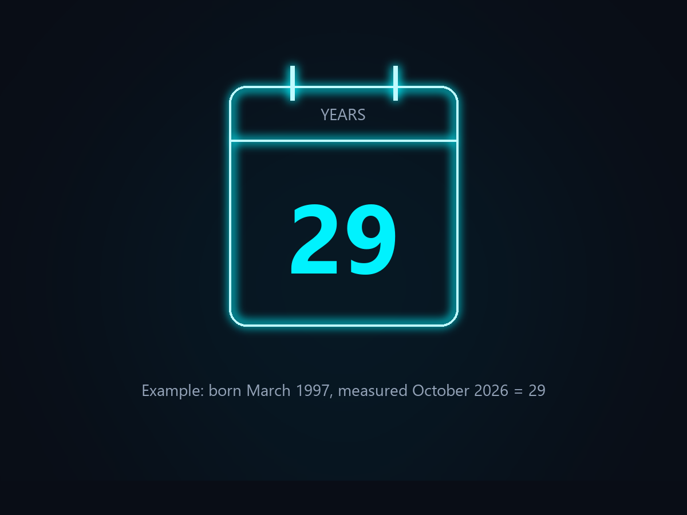

01

Parameter 1
Age (Years)
Your age in completed years. At the same body size, body fat tends to change with age, so the model uses age alongside your measurements.
Enter your age in whole completed years - do not round up.
Use your age on the day you take the measurements.